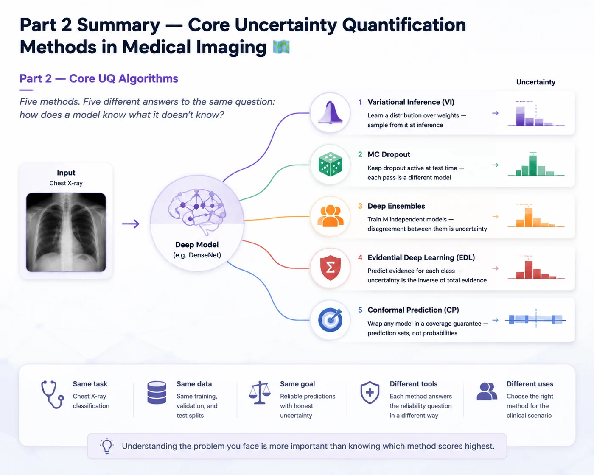
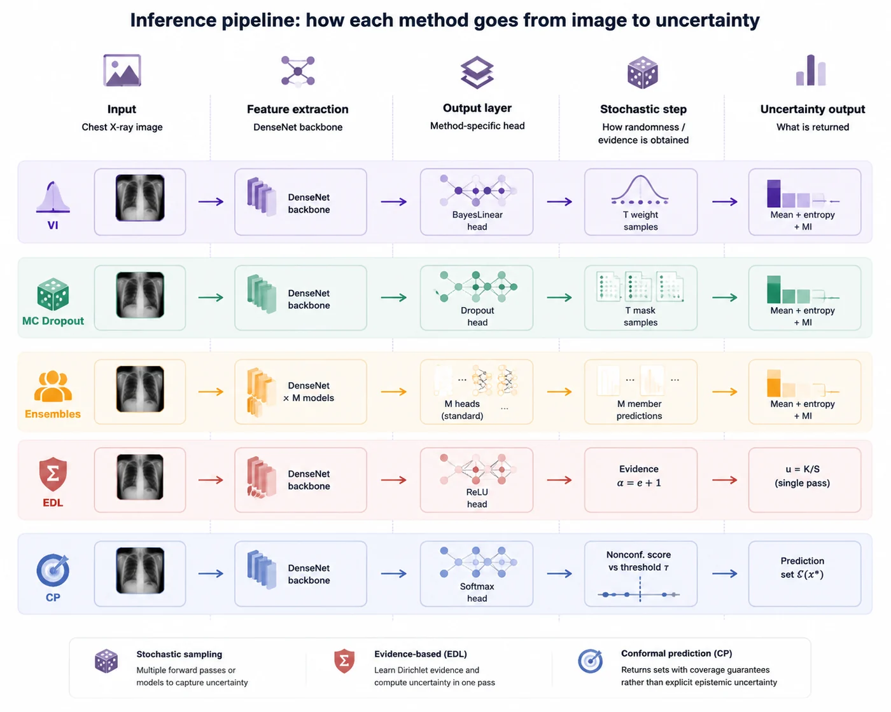

Session 15 — Part 2 Summary — Core Uncertainty Quantification Methods in Medical Imaging 🗺️¶
Part 2 — Core UQ Algorithms
Five methods. Five different answers to the same question: how does a model know what it doesn't know?

What this notebook is¶
Sessions 5 through 9 introduced five distinct approaches to uncertainty quantification in deep learning, all applied to the same chest X-ray classification task. Each method came with its own theoretical motivation, implementation strategy, and clinical interpretation.
This summary notebook consolidates everything. It is not a ranking. It is not a competition. Each method solves a different version of the reliability problem in medical imaging AI — and understanding which version of the problem you face is more important than knowing which method scores highest on a benchmark.
What you will find here:
- A structured comparison table covering all five methods across the dimensions that matter for clinical deployment
- A per-method inference pipeline summary showing how each approach transforms an input image into a prediction and uncertainty estimate in this project.
- A concepts glossary for the key ideas that cut across all methods
- A "when to use which" section grounded in practical clinical considerations
The five methods at a glance¶
| Session | Method | One-line summary |
|---|---|---|
| 5 | Variational Inference | Learn a distribution over weights — sample from it at inference |
| 6 | MC Dropout | Keep dropout active at test time — each pass is a different model |
| 7 | Deep Ensembles | Train M independent models — disagreement between them is uncertainty |
| 8 | Evidential Deep Learning | Predict evidence for each class — uncertainty is the inverse of total evidence |
| 9 | Conformal Prediction | Wrap any model in a coverage guarantee — prediction sets, not probabilities |
📊 1. Structured comparison table¶
The table below compares all five methods across the dimensions that matter most for implementation and clinical deployment. Read it column by column to understand what each dimension reveals, or row by row to understand each method's full profile.
| Dimension | VI | MC Dropout | Deep Ensembles | EDL | Conformal Prediction |
|---|---|---|---|---|---|
| Core idea | Approximate posterior over weights with a Gaussian variational distribution | Keep dropout active at test time for stochastic predictions | Train M independent models; disagreement = uncertainty | Predict evidence per class via a Dirichlet output | Calibrate any model with a coverage guarantee using a held-out set |
| Bayesian? | ✅ Approximate Bayes | ✅ Approximate Bayes | ❌ Frequentist | ❌ Subjective logic / Dempster-Shafer | ❌ Frequentist (distribution-free) |
| Training changes | New loss (ELBO = reconstruction + KL) | None — standard CE, add Dropout layer | None per member — M full training runs | New loss (Bayes risk + KL annealing) | None — post-hoc on any trained model |
| Inference | T stochastic forward passes (weight sampling) | T stochastic forward passes (dropout masking) | M deterministic forward passes (one per member) | 1 deterministic forward pass | 1 deterministic forward pass + calibration lookup |
| Multiple passes needed? | ✅ Yes (T passes) | ✅ Yes (T passes) | ✅ Yes (M passes) | ❌ No (single pass) | ❌ No (single pass) |
| Uncertainty type | Epistemic + aleatoric | Epistemic + aleatoric | Epistemic + aleatoric | Epistemic + aleatoric (analytic decomposition) | Coverage guarantee — not a probability |
| Output type | Probability distribution + variance | Probability distribution + variance | Probability distribution + variance | Dirichlet parameters → evidence strength | Prediction set with $\geq 1-\alpha$ coverage |
| Extra parameters | 2× head (μ + σ per weight) | None | None (per member) | None | None |
| Computational cost | Training: higher (ELBO). Inference: T × standard | Training: standard. Inference: T × standard | Training: M × standard. Inference: M × standard | Training: standard + KL. Inference: 1 × standard | Training: standard. Inference: 1 × standard + calibration |
| Key hyperparameter | kl_weight (prior/data balance) | Dropout rate $p$ (must match train/test) | M (number of members) | lambda_max (KL annealing strength) | $\alpha$ (target miscoverage rate) |
| Practical advantage | Principled posterior — honest uncertainty when correctly tuned | Cheap uncertainty estimation without architectural redesign | Most reliable uncertainty under real-world distribution shift | Fast uncertainty estimation with a single forward pass | Statistically guaranteed error control at user-defined risk |
| Key limitation | Mean-field underestimates epistemic uncertainty | Overconfident on OOD; dropout rate sensitivity | Linear cost in M; diversity may collapse on small data | OOD overconfidence; KL sensitivity; theoretical gaps | Marginal guarantee only; needs calibration set; breaks under shift |
| Aleatoric/epistemic split | Sampling-based decomposition using predictive entropy and mutual information across multiple stochastic forward passes | Sampling-based decomposition using predictive entropy and mutual information across multiple stochastic forward passes | Sampling-based decomposition using predictive entropy and mutual information across multiple stochastic forward passes | Analytic decomposition from Dirichlet evidence parameters in a single forward pass | Not applicable |
| Architecture in this project | DenseNet121 + BayesLinear(1024, 2) head | DenseNet121 + nn.Dropout(0.3) + standard head | 3× DenseNet121 with different seeds | DenseNet121 + nn.Linear(1024, 2) + ReLU | Standard DenseNet121 (any base model) |
🧭 2. The Inference Pipeline For Each Method¶
The following figure provides a visual snapshot of the inference pipeline used for each UQ method implemented in Part 2. For all approaches, chest X-ray images are first processed by a DenseNet-based feature extractor, after which each method applies a different uncertainty estimation strategy at the prediction stage.
VI, MC Dropout, and Deep Ensembles rely on stochastic prediction sampling, where multiple forward passes or model predictions are aggregated to estimate predictive uncertainty through total entropy and mutual information. In contrast, EDL performs a single forward pass and directly derives uncertainty from learned Dirichlet evidence parameters. CP differs from probabilistic uncertainty estimation methods by generating prediction sets using nonconformity scores and a calibrated threshold, providing coverage guarantees instead of explicit epistemic uncertainty modeling.
In the following image, we show a pipeline for each method to provide an intuitive snapshot of how predictions and uncertainty estimates are generated.

🏥 3. When to use which method?¶
There is no universally best UQ method. The right choice depends on the clinical context, the computational budget, the regulatory environment, and the specific reliability problem you are trying to solve. This section frames the decision as a series of questions — not a ranking.
🔵 Consider Variational Inference when...¶
- You want a principled Bayesian posterior and are willing to invest in the ELBO training setup
- Your model is small enough that doubling the head parameters is acceptable
- You are in a research context where the theoretical connection to Bayesian inference matters for publication or interpretation
- You want to use Bayesian active learning — epistemic uncertainty from VI is a natural acquisition function
Watch out for: mean-field overconfidence on ambiguous inputs, ELBO instability during training, kl_weight sensitivity.
🟢 Consider MC Dropout when...¶
- You have an existing trained model with dropout and want uncertainty with zero retraining
- Computational budget is limited and you need the cheapest possible UQ solution
- You need a fast prototype to demonstrate that uncertainty is useful before investing in a more expensive method
- Your architecture naturally accommodates dropout (MLP heads, transformer attention dropout)
Watch out for: dropout rate sensitivity, OOD overconfidence, BatchNorm interaction, not all architectures are dropout-friendly.
🟡 Consider Deep Ensembles when...¶
- Calibration quality is the primary concern — ensembles are consistently well-calibrated empirically
- You have the compute budget for M full training runs
- The diversity collapse risk is low — you have enough training data for M models to find genuinely different solutions
- You can store and serve M full models in your deployment infrastructure
Watch out for: linear cost in M, diversity collapse on small datasets, no formal Bayesian interpretation.
🔴 Consider Evidential Deep Learning when...¶
- Inference latency is critical — a single forward pass is all you can afford (real-time screening, edge deployment)
- You want a clinically interpretable uncertainty — evidence strength $S$ is easier to communicate than entropy
- You need aleatoric/epistemic decomposition without T forward passes
- You are willing to carefully tune the KL annealing schedule and validate OOD behaviour
- You are in a research context exploring second-order uncertainty and want to build intuition for evidential methods
Watch out for: OOD overconfidence, KL weight sensitivity, theoretical properties don't always hold empirically — always validate on your specific dataset.
🟣 Consider Conformal Prediction when...¶
- You need a formal, regulatorily defensible coverage guarantee — for FDA clearance, clinical trial protocols, or institutional validation
- You want prediction sets rather than probability scores — more natural for clinicians than entropy values
- Your base model is already trained and you want to add uncertainty without retraining
- You can afford a held-out calibration set — data that is neither training nor test
- You are in a binary or multi-class decision task where the differential diagnosis framing is appropriate
Watch out for: marginal guarantee only (check conditional coverage), exchangeability assumption breaks under distribution shift, calibration set reduces effective training data.
✅ Part 2 complete¶
You have now seen five different answers to the question: how does a model know what it doesn't know?
Each answer is correct — in its own context. Each carries trade-offs that are real and measurable. The goal of this course has never been to tell you which method is best. It has been to give you the understanding to make that judgement yourself, for your specific clinical problem, your computational constraints, and your deployment environment.
➡️ Next: Part 3, Session 16: Calibration
How trustworthy are a model’s confidence scores? Next session covers calibration, overconfidence, ECE, reliability diagrams, and Brier score, then introduces practical methods such as temperature scaling, Platt scaling, and isotonic regression to improve confidence estimates for clinical AI.